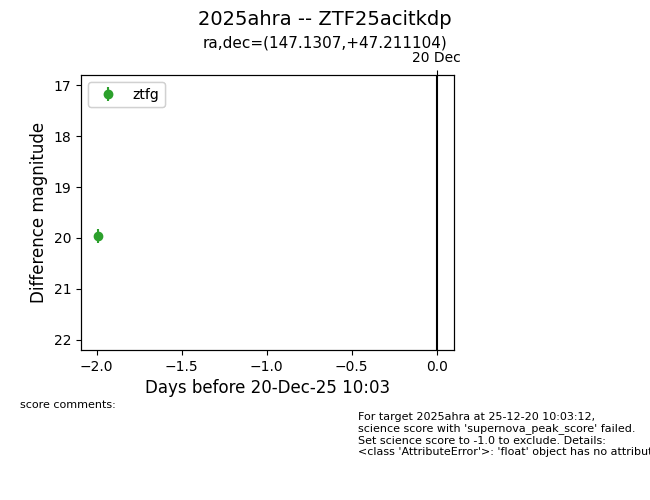
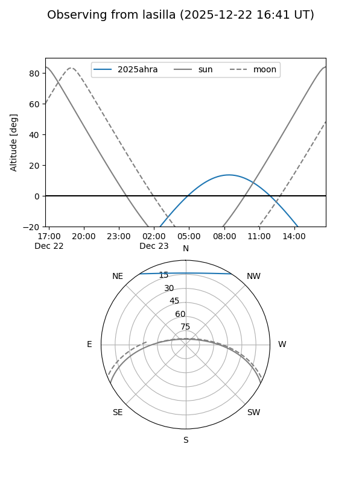
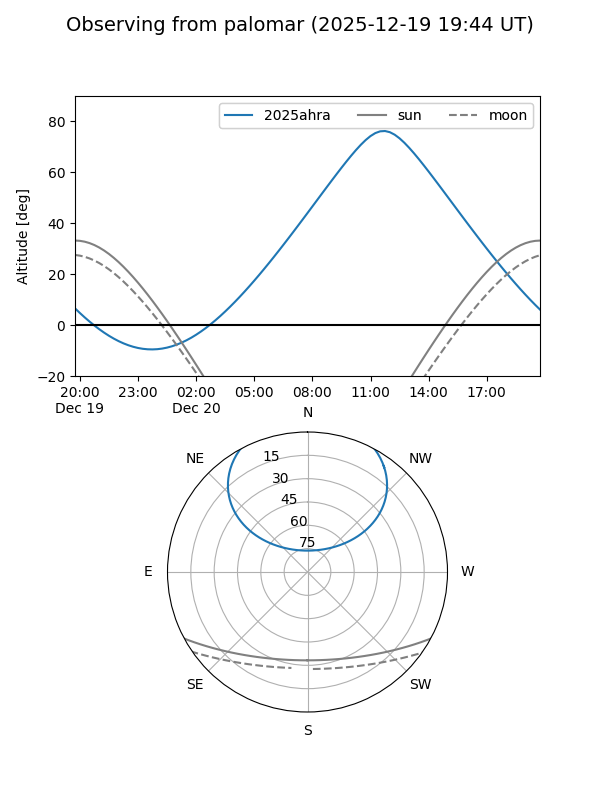
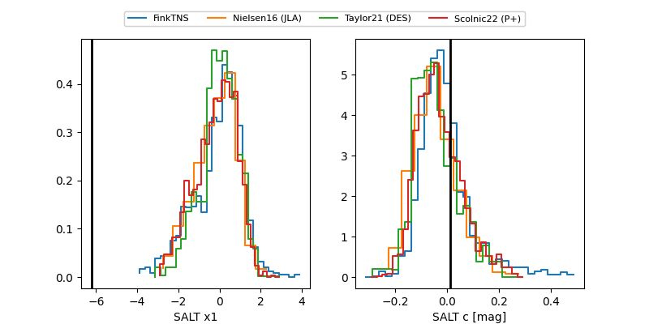

2025ahra
Target 2025ahra at 2025-12-20 12:14
Aliases and brokers:
FINK: fink-portal.org/ZTF25acitkdp
Lasair: lasair-ztf.lsst.ac.uk/objects/ZTF25acitkdp
ALeRCE: alerce.online/object/ZTF25acitkdp
TNS: wis-tns.org/object/2025ahra
YSE: ziggy.ucolick.org/yse/transient_detail/2025ahra
alt names
ZTF25acitkdp (ztf,fink_ztf)
2025ahra (tns,yse)
Coordinates:
equatorial (ra, dec) = 147.1307,+47.21110
equatorial (HMS+DMS) = 09:48:31.37,+47:12:39.97
galactic (l, b) = (171.0008,+49.16988)
Flags:
Photometry:
last ztfg=19.96, ztfr=20.03
1 ztfg, 1 ztfr detections
Lightcurve

Visibility


Additional plots
